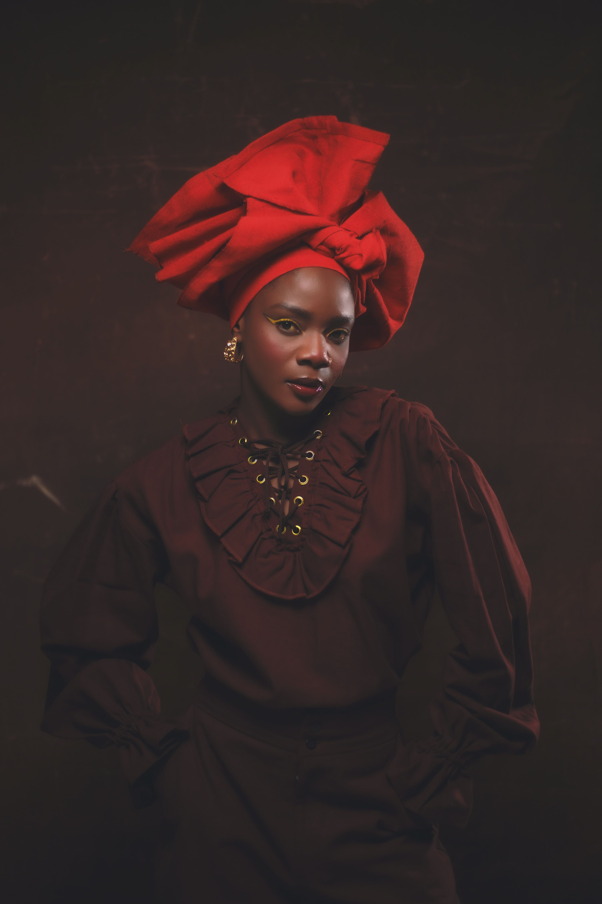

Bienvenue chez Sobrama
Chez Sobrama nous sommes dans le domaine de la photographie de l'information,
Nous avons des studio-photo.

symbole de beauté de dignité et de fierté.
Son regard profond révèle une force intérieure et une histoire silencieuse.
Elle incarne la grace et l'élégance d'une femme qui connait sa valeur.
comme si elle se retrouvait face à elle-meme.
Parfois, notre plus grand combat n'est pas contre les autres, mais contre nous-meme. Car derrière chaque ombre se cache une partie de nous devons apprendre à accepter.
Des feuilles civrées, orangées et dorées se détachent sur un fond sombre,
avec un mur clair visible à gauche.
La photo, prise à l'écran,laisse apparaitre une fine trame de pixels.-
coiffée d'un grand chapeau noir, lève le visage vers le ciel en souriant.
Elle porte une robe à franges argentées ornée de perles et un colier fin,
une main levée vers son chapeau et l'autre posée sur sa hanche.
Chez nous c'est qualité-prix!